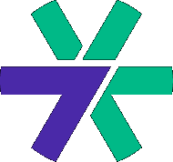
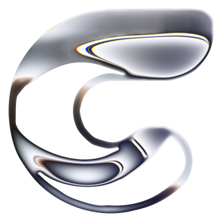
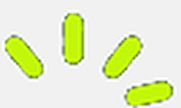

Data professional with multiple years of experience turning business data into decisions.
Currently Data Analyst at Grivy. Full work history on LinkedIn.
Professional Projects

Data Clean Room Pipeline
Privacy-preserving Online-to-Offline campaign measurement across organizational boundaries
Here's the actual shape of the problem: Grivy runs a campaign on Meta, TikTok, or The Trade Desk, and a retail partner wants to know if the people who saw that ad went on to buy something in their stores. Three different companies, one question, and none of us are supposed to see each other's raw customer data.
So the pipeline pushes the same audience to two places at once. The ad platform gets a hashed version of the audience so it can serve the campaign and report exposure. The retail partner gets a separately hashed version of that same audience, hashed with a key that's unique to them, so they can join it against their own purchase data without either side ever exchanging a real phone number or email. Whatever they find, they only send back aggregate counts.
The hashing itself isn't the hard part because it's a well-documented pattern. What I actually spent effort on was making the orchestration layer bend instead of break: every step is config-driven and safe to re-run, so a failed push to one partner doesn't mean redoing the whole campaign by hand.
Semantic Audience Search
Turning a plain-language audience description into a set of matching users at scale
The idea behind this one is simple to say and annoying to build: someone types "young parents who like hiking" and gets back the actual users who match, out of 100 million profiles, without anyone hand-writing a SQL filter for every possible phrase.
The approach itself (embed every profile into a vector, embed the search query the same way, find whoever's closest) isn't the interesting part. The part I'm actually proud of is the refresh. Re-embedding 100 million profiles every month for a tiny fraction of changes would be wasteful, so the pipeline hashes each profile's text and only re-embeds the ones that actually changed. Most months that's about 1% of the dataset. Everything else just gets carried over, which turns a monthly full rebuild into a monthly patch.
The search itself runs as a stored procedure sitting on top of the vector store: it embeds the incoming text, does a nearest-neighbor pass, and hands back the matching user IDs. Same "make it boring" approach as the DCR pipeline, just pointed at a different problem.
Explainable Demand Forecasting
Picking model features with a genetic algorithm so the coefficients still make economic sense
This one's from NielsenIQ, forecasting demand with a plain linear model. Linear regression is about as boring as forecasting gets, which is exactly why we picked it: a category like this doesn't need a fancier model, it needs one a category manager can actually reason about.
The catch is that boring only holds if you're careful about which features go in. Throw every candidate variable at the regression and it'll happily optimize its way to a lower error, sometimes at the cost of a coefficient that makes no sense, like GDP growth coming out negative when everyone in the room knows demand should move with the economy, not against it.
So feature selection became the actual modeling problem. A genetic algorithm searches over subsets of the candidate features, and each candidate subset is scored not just on fit but on whether its coefficients hold the sign we'd expect. A subset that nails accuracy but flips the GDP sign loses to one that's slightly worse on error and gets the story right. We're explicitly trading a bit of accuracy for a model whose explanation survives being said out loud to a stakeholder.
Drone Pipe-Count Inference
Cutting drone inference time 35x by trading a stale YOLOv3 CPU build for a small, better-trained YOLOv5
PT Citra Tubindo Tbk stores pipes in a yard that's also full of heavy vehicles moving product around. Counting inventory by walking the yard is exactly as dangerous as it sounds, so the proposal was to put a drone on it instead and let a model count pipes from the footage.
The model that was already in place was the problem: YOLOv3 running on an unoptimized TensorFlow build, on CPU. It technically worked, but not at a speed anyone could call real-time, and its accuracy wasn't much to defend either since it had barely any labeled data to learn from.
So the fix started before any model training: I went and manually collected and labeled pipe footage myself, then leaned on data augmentation, flips, rotations, lighting variation, to stretch that small labeled set into something a model could actually learn from. Paired with swapping YOLOv3 for a small YOLOv5, inference went from a CPU crawl to something a drone could run against live footage, about 35x faster, and more accurate than the model it replaced.
Side Projects

Centro Studio
A product design and development studio · centro-studio.com
Centro Studio is a small studio Dhimas and I started together. He's a senior product designer at Tabsquare (Delivery Hero) in Singapore, I'm on the data side at Grivy, and between the two day jobs we both had opinions about design and engineering that neither of us got to use fully on our own. Centro is where we use them, on client work and on the studio's own site. He leads interface and motion, I lead the software and the parts that have to survive real traffic, but neither of us stays only in our lane, that's the actual point of doing this together instead of separately.
The chrome mark in the corner up there is the studio's actual logo, and the two case studies it leads to are real: CalcFlow and SADJI, the other two projects on this page.

SADJI
A point-of-sale, QR ordering, and kitchen display platform for Indonesian restaurants and cafes, built with a friend · sadji.app
SADJI is a side project I've been building with my friend Dhimas since the middle of this year: one platform for restaurants and cafes that replaces the pile of separate subscriptions most small F&B places end up paying for, point of sale, QR ordering, a kitchen display, and the dashboard that ties it together. It's a Next.js and Postgres backend on the web side, with a native Android app for the cashiers and kitchen staff who actually stand at the counter all day.
The part I care most about is what happens when the wifi drops mid-rush, because it will. An order on the Android app writes to a local SQLite store first and shows up on screen immediately, the network sync happens after, through a queue that retries on its own and gives every order an ID that can't get duplicated if the same order syncs twice. Checkout was never allowed to wait on a network call, only on the cashier's own tap.
Calcflow PMM Solver Optimization
Cutting CalcFlow's biaxial column solver more than 4x per call and 3.55x on a full detailing batch, without changing the underlying math
CalcFlow takes a structural analysis export from ETABS and runs the concrete column checks required by SNI 2847:2019, Indonesia's building code. One of those checks, PMM, biaxial axial-force-and-moment interaction, has to find the neutral-axis angle and depth where a column's capacity matches the demand for every load case on every column: two nested numerical searches, up to 100 trial angles each bisecting a neutral-axis depth up to around 120 times. A single ETABS export can carry thousands of these rows, so how fast the solver runs directly decides how long an engineer waits after clicking calculate.
Before optimizing anything, I checked the solver against a reference calculation workbook and found it was quietly wrong for any biaxial case: the section geometry was being rotated by the trial angle and then projected onto that same angle again, a composition that mathematically cancels itself out, so rotation was silently ignored. I fixed that, fixed how the concrete compression area accounted for the holes rebar leaves in it, corrected a hardcoded strain constant to the material-dependent value, and locked all of it down with regression tests matched to the workbook to within 0.02%. Only after that passed did I feel comfortable making it faster, since a faster wrong answer isn't worth much.
The hot loop had two straightforward wastes: it recomputed the same rotated section geometry from scratch on every neutral-axis trial even though only the depth changes within a fixed angle, and the bisection loop was re-evaluating bounds it had already just computed one step earlier. Hoisting the geometry setup and cutting the duplicate evaluations brought a single solve down to 1.58ms. The last piece was parallelism: splitting the one-time setup from the per-row loop and sharding a job's force rows across a pool of Web Workers instead of running everything on one thread. On a representative batch, 30 columns across 3 stations and 45 load combinations, 4050 rows, that took the job from 5.7 seconds single-threaded to 1.6 seconds across six workers, verified byte-identical to the single-threaded output.
Toy Projects
Julia Set Animation
A script to generate a Julia Set animation, using JAX for faster rendering times.
View Project Sample AnimationDrawing Contours using Discrete Fourier Transformation
A script to generate drawings of a contour using Discrete Fourier Transformation.
View Project Sample Animation